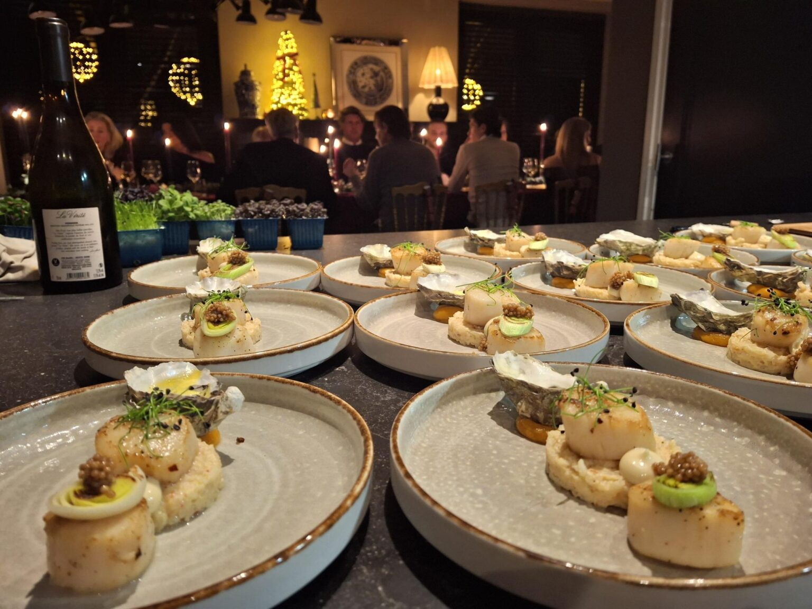
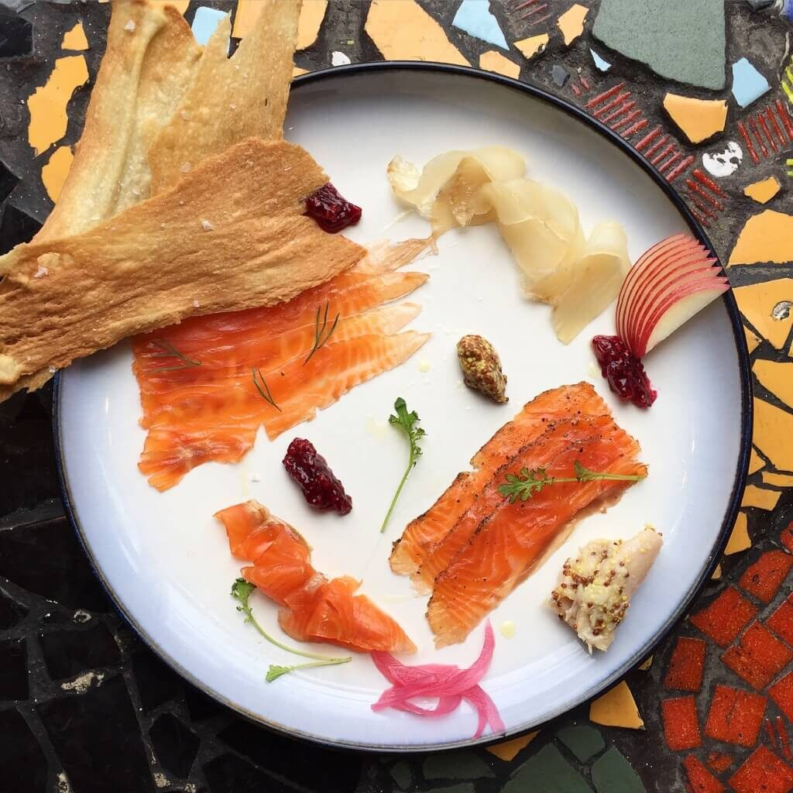
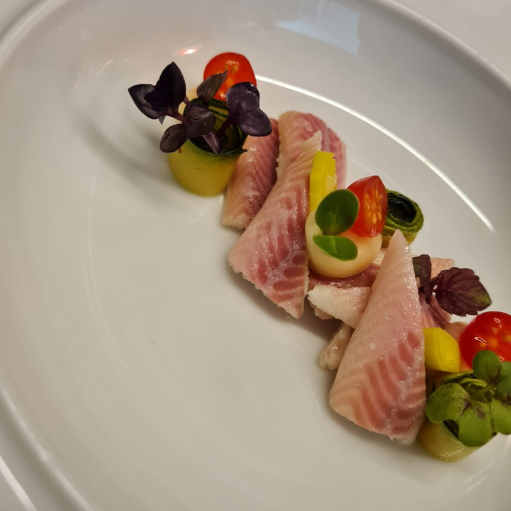
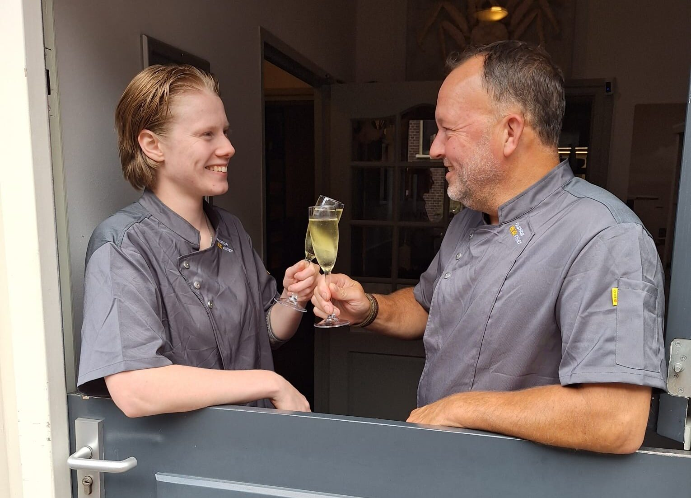

St. Aagtenstraat 5, Leiden
De smaak van de zee, centraal.
Eerlijke visgerechten, geïnspireerd door de zee, met aandacht voor smaak en kwaliteit. Al meer dan 24 jaar een begrip in Leiden en omstreken.
Welkom bij Visrestaurant Crabbetje
Oesters staan bekend om hun parels, en om hun fantastische smaak. Leiden heeft met visrestaurant Crabbetje zo'n oester in huis: een verborgen pareltje waar de smaak van de zee centraal staat.
De specialiteit van het huis, onze Chef's menu's met dagverse vis op verschillende manieren bereid, staat garant voor een waar visavondje uit. Laat u verrassen door onze steeds wisselende menukaart en seizoensproducten.



Kerst bij Crabbetje
Donderdag 24 en vrijdag 25 december serveren wij een vijf gangen kerstdiner, inclusief welkomstbubbel en amuse.
79,50 per persoon
Deze dagen serveren wij uitsluitend het kerstmenu. Reserveren via de website.
Wijn, cadeaubon en catering
Wijnkaart
Omdat onze wijncollectie regelmatig wordt vernieuwd, vindt u onze wijnkaart niet online. Tijdens uw bezoek adviseren wij u graag een wijn die perfect aansluit bij uw gerechten en smaak.
Cadeaubon
Voor een leuk cadeau hebben wij eigen cadeaubonnen van visrestaurant Crabbetje.
Catering
Op aanvraag verzorgen wij de catering van uw evenement of feest. De mogelijkheden variëren van een aangeklede borrel tot een buffet. Ook voor zakenlunches kunt u contact met ons opnemen.
Wat onze gasten zeggen
Buitengewone ervaring. Kwaliteitsvolle gerechten. Zeer goede prijs/kwaliteit verhouding. Uitmuntende service, steeds met de smile, ongeacht onze bijkomende wensen.Hans, Tripadvisor
Wat een heerlijk eten in een fijne sfeer! We hebben gekozen voor een 3 gangenmenu en het was heerlijk: goede smaakcombinaties, prachtig opgediend, erg vriendelijke bediening, dus een topavond!Hilde V, Tripadvisor
Van buitenaf wat onooglijk, maar binnen een goede sfeer. In al die jaren dat wij ergens sliptong hebben gegeten was dit met stip het beste wat we tot nu toe hebben gehad.Ad C, Tripadvisor
Reserveren
Reserveer online of bel ons op +31 (0) 71 51 288 46.
- Tot en met 6 personen is ons à la carte menu beschikbaar. Reserveert u voor 7 personen of meer? Dan serveren wij u ons 3, 4, 5 of 6-gangen menu.
- Op sommige dagen vragen wij een kleine aanbetaling. Meer informatie krijgt u tijdens het reserveren.
- Is een dag op de kalender niet boekbaar (behalve zondag en maandag)? Bel ons gerust, misschien kunnen wij nog een plekje voor u vrijmaken.
- U ontvangt automatisch een bevestiging. Kijk ook in uw spam.
- Allergie of dieet? Meld het bij het reserveren. Honden zijn bij ons helaas niet toegestaan.
- Problemen met reserveren? Mail info@crabbetje.nl.
Contact
Neem contact op met Visrestaurant Crabbetje. Stel uw vraag aan ons team. Wilt u meer weten over onze mogelijkheden voor zakenlunches of catering? Vermeld dan kort uw wensen en wij nemen zo snel mogelijk contact met u op.
Visrestaurant CrabbetjeSt. Aagtenstraat 5
2312 CA Leiden
+31 (0) 71 51 288 46
info@crabbetje.nl
Dinsdag tot en met zaterdag vanaf 17:30 uur. Zondag en maandag gesloten.